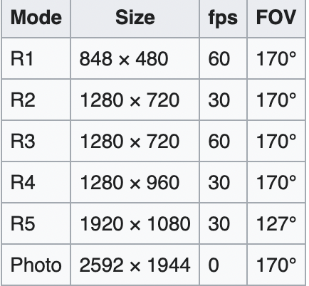

What is a GoPro you may ask. Well it is a small action camera, that is the best in the market. If you havent heard of them. I will tell you all about it.
The CEO of GoPro is, Nick Woodman.
NICK Woodman(CEO of GoPro)
He is a american technology company. The company started in 2002 in San Meteo California, Nick woodman made GoPro was made because he was a avids surfer and after watching amateur photographyers like himself strugggle to take pictures while surfing the waves in Australia, and Indonesia.
So Woodman started the company after saving from sellin shell, and bead belts, and camera straps form his volkswagan van as well as a loan from his parents of around $200,000. The firt GoPro that was released was in septembber 2004. the first GoPro was called, GoPro Hero 35 MM. this camera was underwater camera that came with
a wristband attachment and a sturdy polycarbinate housing. the bepth of the first GoPro was reached to 15 feet or 4.57 meters, it also had a free IOS 400 roll of film good for 24 exposures. Now the prize of the frst GoPro was $30. Now to days GoPro cameras are 300 or 400 dollars, but they have upgradet over the years. it manufactures
action cameras and develops its own mobile apps and video-editing software. Founded as Woodman Labs, Inc, the company eventually focused on the connected sports genre, developing its line of action cameras and, later, video editing software.
The secound GoPro camera he made, wsa the first Digital (1st gen). The first generation GoPro Digital HERO cameras, was made in (2006-09).
the GoPro HERO was powerd by convertional AAA bateries, and it included a rugged housingso so you can use it under water, and it can with a wrist strap. the Digital HERO had a, DH1; 640x480, the resolution was, 240p video in 10 seconds clips. the Digital HERO succeeded in 2006, by the Digital HERO3. the Digital HERO3 had a, DH3; 3-megapixel stills, 384p vidoe, and Digital HERO5 had a,
DH5; was the same as the DH3, but with 5-megapixel. All three of the Digital HERO, had a 54 angle of view. A varant of the the DH5 was released with an, extrene wide-angle lens with 170 of angular coverage on the diagonal as the wide HERO. All of the Wide HERO had to have a different housing than the first-gen cameras (DH1/DH3/DH5), so it could be accommosatre its larger lens. The Digital HERO
released in 2006. The model was SQ907 mini-cam, it has a 640x240 camera and shot QVGA definition 320X240, 10fps. the video was a maximum of 10 secounds, and the Digital HERO1 had a 32 MB internal memory without a SD slot.
Next the, Digital HERO3, was released on Februaty 21, of 2007, it had a 3-megapixle camera and shot standard definition 512x384 video. It could go up to 30m (98.4 feet) in depth.
The Digital HERO5 was the first introduced in 2008. it had a 5-megapixel still photo sensor and supported standard definition (512x384) video caprure. IT could run on two AAA batteries, it also had a 16 MB of internal memory and could function woth a 2 GB SD card. it's housing was rated to be 100ft/30 meters deth. it's dimensions were 2.6 x 1.75 x 1.25 inches (66 x 44 x 32 mm). The camera was
not designed to work with the newer HD HERO line of housing, although the standard screw mounts are indeed compatible. the DH5 was marketed with the a basic cameras and housing as the Wrist HERO, ot the bundled with accerssories as the Motorsports HERO.
Now the GoPro Wide HERO was the first modle camera with a 170 wide-angle lens. It was released in 2008 alongside the Digital HERO5, and it had the same 5MP
sensor (2592x1944), capable of 512x384 at 30fps video with sound recording (up to 56 min. on a 2GB SD card). It could take 5MP photos, 10s self timer, 3X sequence still phots burst, and Auto photo every 2 or 5 seconds mode. It was powerd by 2 x AAA batteries, but were not included in the box when you bought it. The Wide HERO was marketed with the basic camera and housing alone, or bundled with accessories
(as the Surf HERO, Motorsports HERO Wide, or Helment HERO Wide). The camera was later renamed the SD HD HERO 170 to emphasize the different with the succeeding HD HERO secound generation cameras.
The second generation of the HERO cameras were made in 2010-11. At theat year the cameras were branded HD HERO for their upgraded resolution, now offering up to 1080p high-definition video. With the HD HERO generation, GoPro dropped the optical viwefinder.
The fourth of the basic HD HERO wsa markered either with a basic set of accessories like a case, and a mount. As the naked, or in bundles with the additional accessories named dor the intended purpose. Such as the HD Helmet HERO, HD Motorsports HERO, and the HD Surf HERO. For all the HD HERO variants, the camera shoots a masimun of 1080p video with a reduced field of view (127) on it's 5 MP sensor. Alternative resolitions for the HD HERO included 960p39, 720p60, 720p30,
and a 480p60, with the same wide-angle (170) view as the previous-generation Wide HERO. IT was first listed on January 25, 2010.
Here are the HD HERO spexifications
* Sensor size: 1/2.5-inch (5.75 mm x 4.28 mm)
* Pixel size: 2.2 μm
* Connectivity: Mini USB 2.0; Component
* Image formats:

The HD HERO also offered an expansion port on the camera's rear panel, branded the HERO Bus. Optional accessories included the LCD Bakpac, which offered a small monitor that displayed and played back video, and the battery Bakpac, which doubled the battery life of the camera.
The HD HERO 960 was a reduced-cost version of the, HD HERO that shoots at a masimum video resolution of 960p30, and is not compatible with the electronic accessories for the HD HERO, because it lackes the proprietary HERO Bus expansion port, although the camera is compatible with all GoPro mounts. It was the first listed on August 6, 2010.
The HD HERO2 was launched on October 24, 2011. It had a 1/2.3" 11 MP image sensor, imroved low-light capability and records at up to 120fps. It was sold with in three different accessory packages as the Outdoor, Motorsports, and Surf Editions. In the late 2012, GoPro announced the HERO3 line of cameras. Thoughts cameras came in three editions: black, sliver, and white, denoting the relative capabilities of each camera, in desecnding order. Externally, the model is distinguished
by the ink used to print the GoPro HERO3 number on the frount of the camera. All of the three versions of the HERO3 come in a 30% smaller and 25% lighter package, with WIFI built in them. The changes of the physical dimersions of the cameras compaerd to the precious generations ( HD HERO and HD HERO2 were phisically identical). That means some of the accessories for the HE HERO Original and the HERO2 are not compatible with the HERO3, so GoPro made a new version of those accessories specifically for the HERO3+. On the bottom, there ser new versions of
accessories are usally not compatible with thte older Hero cameras generation. But some of the other accessories are compatible with all HD Hero camera generations.
The HERO3 silver, and the Blcak cameras have significantly less battery endurance than the HE HERO Original and HERO2. For example, in 720p resolution with 25/30 fps, while HD HERO Original and HERO2 have a stated battery, the runtime is 3 hours, for the HERO3 Silver Edition Has a stated runtime of 2 hours, and the HERO3 Black Edition has a started battery runtime of 1.5 hours. ( the black Editions most econmical settings is 1080/30 fps, so this also partially contributes to its poor battery runtime.
The Black Edition has a new 12 MP sensor that can captuer 4k UHD ditital vidoe at 15fps, 2.7k vidoe at 30 fps, 1440p at 48fps, 1080p at 60 fps, 960 at 100 fps, 720 at 120 fps and WVGA at 240 fps. The Black Edition also includes the WIFI Remote. The Black Edition cannot record at 25/30 fps in 720 and WVGA resolutions. It can only record at very fast frame rates in those resolutions. This is a deliberate firmware limitation, as the manufacturer does not expect thay this high-end camera moldel will be used at these lower resolutions and frame rates.
The Silver Edition uses the same 11 MP Sensor as the HD HERO2, and the White edition uses the same 5 Mp sensor as the HD HERO Original.
On October 2013, GoPro released the HERO3+, it was acailable in black, and silver Editions, replacing the HERO3 generation. the HERO3+ camera modles claim dramatically improved low light preformance, and has a waterproof enclosure which is 20% lighter, and 15% smaller than the HERO3's, according to the GoPro website. The HERO+ camera housing is 20% smaller than the HERO3. The cameras are claimed to have improved image sharpness (close fouces down to 7 vs about 3 ft on the HERO3, at the espense of
distant focus which is slightly less sharp with HERO3+), and better audio functionality with wind noise reduction. Battery life is claimed to be 30% longer than for the HERO3 model (both through bettr effciency and a higher-capacity battery of the same dimensions). The Black Edition has vidoe modes of 1440p48, 1080p60, 960p100, and 720p120 as well as 4k15, and 2.7k30, and can shoot 12 MP stills at up to 30fps. The HERO3+ Black Edition also offers an optional function in firmware. It was called SuperView, which increases the field of view. It has additional functions,
it includes dynamic low light situation adjustment, highrt-quality recording modes, higher bitrates, no white balance applied, etc. The black Edition coutiunes to include a WiFi Remote. It does not have the abiliy to record 25/30 fps in 720p and WVGA modes. it can only record at a very fast frame rates in those lower resolutions. This is an intentional firmware limitation. The battery runtime of HERO3+ Black Edition is significantly longer than HERO3 Black Edition BUt 30-50% lower than the Battery runtime of the older HERO2 and HERO1. The Silver Edition has video modes of 1080p30
and 720p120 and can shoot 10 MP stills at up to 10 fps. In the contrast to the Black Edition, the Silver Edition can record at 25/30 or higer, in all supported resolutions. HERO3+ Silver Edition also has about 25%-50% longer battery runtime during recording than HERO3+ black Edition, they both use the same batteries. The difference in runtime depends on the resolution/fps combination, and whether WIFI and GoPro mobile application are used during recording. The difference in runtime increases as teh fps is lowered and the assitional funvtions are deactivated on both cameras.
The battery runtime of HERO3+ Silver Edition is similar to the battery runtime of HERO2 and HERO1. The HERO3 HD camera was awarded the 2013, Technology & Enginering Emmy Award for its contribution to television.
In september 2014, GoPro announced the HERO4, available in Black Edition and Silver Edition, which replace their respective HERO3+ generation predecessors.


.jpg)


.jpg)